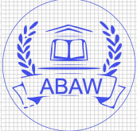

Xuesong (Shonnon) Zhang Hefei University of Technology (HFUT) School of Computer Sci & Information Engineering, School of Artificial Intelligence Laboratory for Multimedia Computing (LMC) > Email: xszhang_hfut@mail.hfut.edu.cn
|

|
News
- 08 / 2023: We won 1st place in CVPR 2023 5th ABAW Workshop
- 10 / 2022: One paper is accepted by IEEE Access 2023!
- 08 / 2022: One paper in 中国图像图形学报 2023 REVERIE Challenge!
- 07 / 2021: One paper is accepted by NCAA 2021!
Biography
Xuesong is a D.Eng(Doctor of Engineering) student at Information and Communication Engineering, Hefei University of Technology (HFUT), supervised by Prof. Richang Hong, Jia Li and Zhenzhen Hu. Before joining HFUT-LMC, I got my Master degree from FYNU, where I was advised by Jia Zhao >. His research interests include Multimodal Leaning, with a focus on Visual Question Answering(VQA) and Visual langauge navigation(VLN).
Publications
-
Multimodal Feature Extraction and Fusion for Emotional Reaction Intensity Estimation and Expression Classification in Videos with Transformers
Jia Li, Yin Chen, Xuesong Zhang, Jiantao Nie, Ziqiang Li, Yangchen Yu, Yan Zhang, Richang Hong, Meng Wang
-
Diving into the Language Prior Problem: A Model Uncertainty Perspective
Jia Zhao*, Xuesong Zhang*>, Jun He, Xuefeng Wang, Xun Yang
arxiv, 2023. [Paper]
-
Overcoming Language Priors via Shuffling Language Bias for Robust Visual Question Answering
J. Zhao; Z. Yu; X. Zhang>; Y. Yang
IEEE Access, 2023. [Paper]
-
融合答案掩码的视觉问答模型
王峰, 赵佳, 石方宇, 张雪松>, 王雪枫
中国图像图形学报 (CCF-T2), 2023. [Paper]
-
Overcoming language priors in VQA via adding visual module
Jia Zhao, Xuesong Zhang>, Xuefeng Wang, Ying Yang & Gang Sun
Neural Computing and Applications (NCAA), 2022. [Paper]
Patent
-
一种基于问题和图像成对训练的VQA方法和视觉问答装置
王雪枫;赵佳;王宇;杨子龙;张雪松>
2023. [Paper]
Competitions
|  |
ERI ABAW5 @ CVPR 2023 . Our team Joyboy (Jia Li*, Yin Chen*, Xuesong Zhang>, Jiantao Nie, Ziqiang Li, Yangchen Yu, Yan Zhang, Richang Hong† ,Meng Wang) is the winner. See details here: Results of ERI ABAW5 2023. |
Honors and Awards
2023, Winner of ERI Challenge, CVPR 2023 [5th ABAW]
合肥工业大学一等奖学金 2022-2023
2020, Outstanding graduate at the university level of BBMU
| © Xuesong | Last update: Sep 2023 |